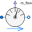
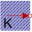
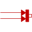
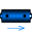
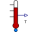

HeatingSystemSimple model of a heating system |
|
Diagram
{kind=link}
Information
This information is part of the Modelica Standard Library maintained by the Modelica Association.
Simple heating system with a closed flow cycle. After 2000s of simulation time the valve fully opens. A simple idealized control is embedded into the respective components, so that the heating system can be regulated with the valve: the pump controls the pressure, the burner controls the temperature.
One can investigate the temperatures and flows for different settings of system.energyDynamics
(see Assumptions tab of the system object).
- With
system.energyDynamics==Types.Dynamics.FixedInitialthe states need to find their steady values during the simulation. - With
system.energyDynamics==Types.Dynamics.SteadyStateInitial(default setting) the simulation starts in steady-state. - With
system.energyDynamics==Types.Dynamics.SteadyStateall but one dynamic states are eliminated. The left statetank.mis to account for the closed flow cycle. It is constant as outflow and inflow are equal in a steady-state simulation.
Note that a closed flow cycle generally causes circular equalities for the mass flow rates and leaves the pressure undefined. This is why the tank.massDynamics, i.e., the tank level determining the port pressure, is modified locally to Types.Dynamics.FixedInitial.
Also note that the tank is thermally isolated against its ambient. This way the temperature of the tank is also well defined for zero flow rate in the heating system, e.g., for valveOpening.offset=0 at the beginning of a simulation. The pipe however is assumed to be perfectly isolated. If steady-state values shall be obtained with the valve fully closed, then a thermal coupling between the pipe and its ambient should be defined as well.
Moreover it is worth noting that the idealized direct connection between the heater and the pipe, resulting in equal port pressures, is treated as high-index DAE, as opposed to a nonlinear equation system for connected pressure loss correlations. A pressure loss correlation could be additionally introduced to model the fitting between the heater and the pipe, e.g., to adapt different diameters.

Components (14)
| tank |
Type: OpenTank |
|
|---|---|---|
| pump |
Type: ControlledPump |
|
| valve |
Type: ValveIncompressible |
|
|  | sensor_m_flow |
Type: MassFlowRate |
|  | T_ambient |
Type: FixedTemperature |
| wall |
Type: ThermalConductor |
|
|  | burner |
Type: FixedHeatFlow |
| system |
Type: System |
|
|  | heater |
Type: DynamicPipe |
| radiator |
Type: DynamicPipe |
|
|  | sensor_T_forward |
Type: Temperature |
| sensor_T_return |
Type: Temperature |
|
| handle |
Type: Step |
|
| pipe |
Type: DynamicPipe |